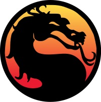

Mortal Kombat |
|
|---|---|
|
Mortal Kombat (commonly abbreviated "MK") is a series of fighting games created by Ed Boon and John Tobias.
The first four renditions and their updates were developed by Midway Games and initially released on arcade machines,
and later to home consoles. The arcade titles were later picked up by Acclaim Entertainment for the home console conversions.
Beginning with Mortal Kombat: Deadly Alliance, Midway Games exclusively created home versions of Mortal Kombat up until
Mortal Kombat vs. DC Universe. Following Midway's bankruptcy, the franchise was picked up by Warner Bros. in July 2009 and
became a part of the Warner Bros. Interactive Entertainment. The most recent title is Mortal Kombat which is an alternate
retelling of the events from the first three games in the series.
|
 |